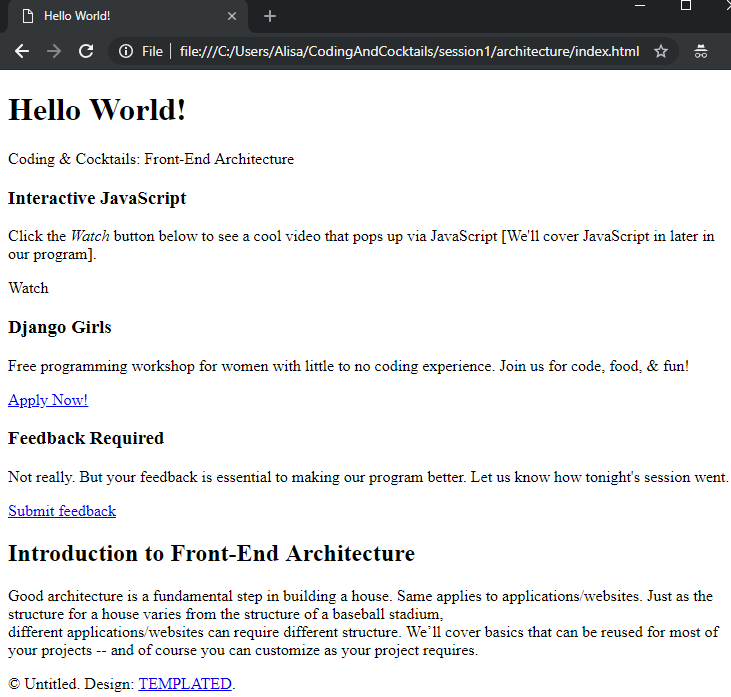
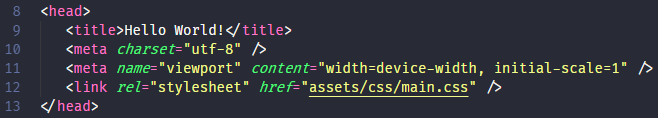

Front-End Architecture and HTML
Tonight we cover front-end architecture and HTML basics.
The combination of these two concepts provides the structure and the bones of a website. Or if you're creating a cocktail, it's the glass that holds your cocktail together.
We’ll put both concepts to use here creating our own web page and begin understanding how to organize your code, HTML structure, as well as becoming more comfortable using an Integrated Development Editor (IDE) to write HTML.
Organizing Assets
Front-end architecture is the organization of code and project files. Though there may be coding standards and practices specific to a team, the goal of good front-end architecture is to provide an efficient workflow that is maintainable throughout the project’s life.
In this section of the worksheet, we will organize files with similar purposes to make it easy to maintain the website.
At the end of this section, you will have a webpage that looks like this:

Before starting the worksheet, please take a moment to review the Setup instructions to ensure you have all the tools and workspace setup you need for tonight's work.
This section will help guide you through the following steps:
Create application folder and download assets
Let's get the files we need so we can practice website asset organization.
Download the assets at http://bit.ly/2bVHBAi and unzip the file. Leave the file explorer open to your unzipped files.
Not sure how to extract the contents of the zip file?
Mac users: Double click on the downloaded file with the .zip extension
Windows users: Right click on the file with the .zip extension and choose Extract All.If it's taking a minute to download, use the time to introduce yourself to your neighbors! Your neighbors will be your buddies tonight and someone you can reach out to on Slack between sessions!
Here's an icebreaker question. Ask your neighbors, "What is your most used emoji and why"?
Create a new folder named "architecture" in your "CodingAndCocktails/session1" folder. We will use this for the front-end architecture portion of the worksheet and will serve as the root directory for your application. You will be moving the unzipped code files into this new "architecture" folder.
If you don't have a "CodingAndCocktails/session1" directory, take a moment to set up your workspace.
The root directory is the top level directory for your project.
The CREDITS, LICENSE and index.html files will live here for the website we'll be previewing. These contain information on copyright information and credits for any licensed objects. The template downloaded is licensed by templated.co, a great resource for website templates.
Group like files into appropriate directories
Now we need to group like files so that the website assets are well organized.
Create the following folder structure inside your "architecture" directory. The "assets" folder contains 5 folders inside of it.
Let’s get organizing! Move the downloaded project files to the correct folder like in the following diagram. You will move files from your unzipped folder to the ones you created in the "architecture" directory. Notice some of the files live in the root folder.

Assets are valuable files for your web site or application. Think CSS, JavaScript, images, videos, etc.
The directory name js is interchangeable with the directory name scripts. Using "scripts" or "js" as the directory name is personal preference.
Open the index.html file in Google Chrome to preview your site. Oh no! Looks like the site is broken. We’re missing the styling and some images specifically. Our HTML page doesn’t know how we’ve organized our project so we’ll need to tell it where to find the files it needs. Leave the tab open so we can see our progress in the next section.
You can open an index.html file in Chrome by double clicking on the file.

Update references in the HTML file
Let's update references to the assets in index.html by replacing the string DIR with the correct path name so that our website displays properly.
Open Visual Studio Code (VS Code) from your installed applications. You can close all the default tabs that display. In VS Code, select File
 Open Folder.... Navigate to and select the "architecture" folder.
Open Folder.... Navigate to and select the "architecture" folder. In VS Code, expand the "architecture" folder in the EXPLORER pane and double click index.html to open it for editing. Your VS Code editor should look like the picture below.
In the index.html file, search for a line starting with
<!-- REPLACE DIR PATHand ending with-->.The
<!-- -->wraps a comment in HTML. We'll learn more about it tonight.Let's work through the first one we see on line 12 together.
Remove the opening comment block,
<!-- REPLACE DIR PATH. Also remove the closing comment mark,-->at the end of the same lines.In the remaining code on that line, you’ll see
DIRwhere the path of the referenced file should be. ReplaceDIRwith the applicable file path. In the example below, the path isassets/css.Before:

After:

Save your file to see your work by selecting File
Save in VS Code. You can also use the keyboard shortcut ctrl + son Windows orcmd + son Mac. Unsaved files in VS Code have a little dot on tab of the file and in the EXPLORER pane.In Chrome, reload index.html. Wow! The page looks so different with styles!

In VS Code, go through the rest of the index.html file and make the same necessary changes for the other lines beginning with
<!-- REPLACE DIR PATH. Feel free to save and inspect your work in Chrome as you go along. Once done, save index.html.If you can't remember the folder names, you can expand the "architecture" folder in VS Code's EXPLORER pane.
Keep an eye out for
data-video="DIR". When you get to this code block, make sure to read all the<!-- Banner -->comment details for replacingDIRwith the file path. When you set this, there is JavaScript that will load a video in the background of your site.Reload index.html in Chrome. Chrome has a powerful built-in way to look for errors and inspect your code, called Chrome DevTools. Let's open Chrome DevTools to see if there are any errors finding references.
Opening up Chrome DevTools to identify and fix errors is debugging code. Fancy!
Open Chrome DevTools on Windows by pressing
F12and on a Mac using the keyboard shortcutcmd + option + i. If you missed a file reference it will show up as an error. Errors show up as a red 'x' in the toolbar of DevTools. Select Console to see more details about an error.
Fix any errors you find. The red text in the console will give you a clue on where the error is. Pat yourself on the back if you don't have any errors! Pat yourself on the back if you had errors and fixed it using Chrome DevTools!

Your site should now be working! We’ve organized all your files AND index.html references all the assets properly.
Nice job! Celebrate a toast with your neighbor!